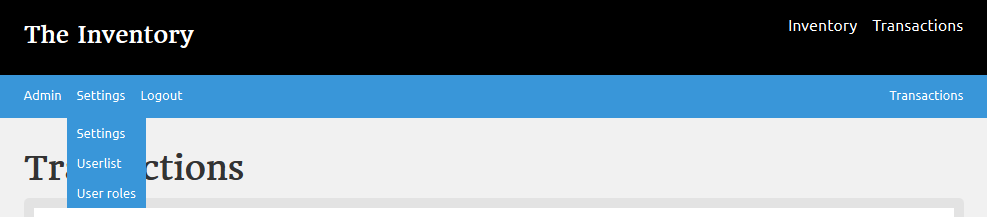
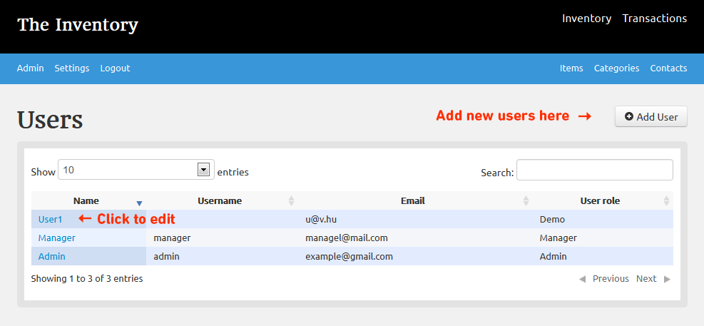
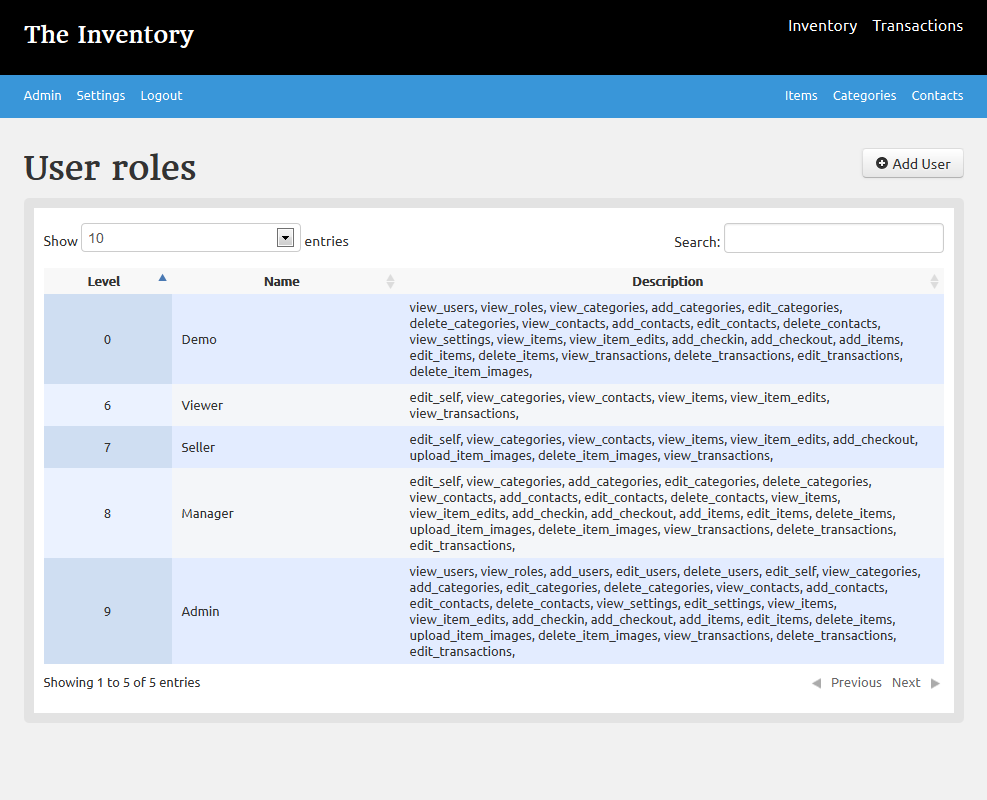

The Inventory has a role based multi-user system.
Only an admin or the system default super-admin can add users and manage permissions
You find all the user related data under the settings drop-down menu

User-list
Al the users their roles are listed here. Here you can add users and by clicking on their name, edit or delete them. Only admin can add/delete users.
Users are identified by their username at login screen.

Roles
The Inventory has user roles to limit what users can and cant do. they names should be self explanatory, but on this screen, the permissions are listed.
these values are pre populated, and at current state of the software can be only changed in database.

Created with the Personal Edition of HelpNDoc: Free EPub producer